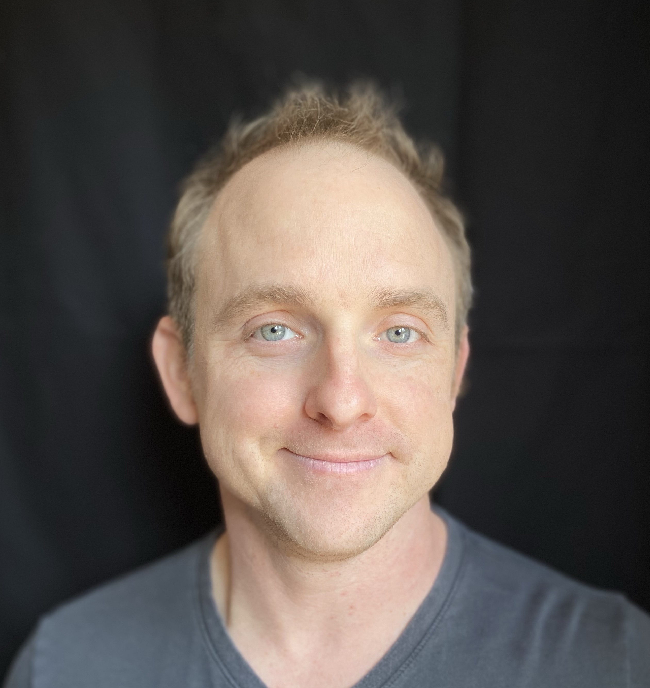

- Name:
- Sean P. Jungbluth, Ph.D.
- Current Position:
-
Research Faculty, Estuary and Ocean Science Center, Tiburon, CA
Adjunct Professor of Biology, San Francisco State University, San Francisco, CA
Research Affiliate, Lawrence Berkeley National Laboratory, Berkeley, CA - Research Interests:
- Molecular biodiversity, ecology, data science, eDNA metabarcoding, machine learning and AI, biological oceanography, autonomous and remote-operated vehicles, microbial genomics, metagenomics, bioinformatics, computational biology, field-based sampling
- Email:
- jungbluth.sean@gmail.com
- Homepage:
- jungbluthlab.org